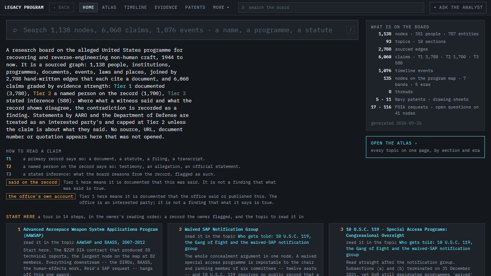
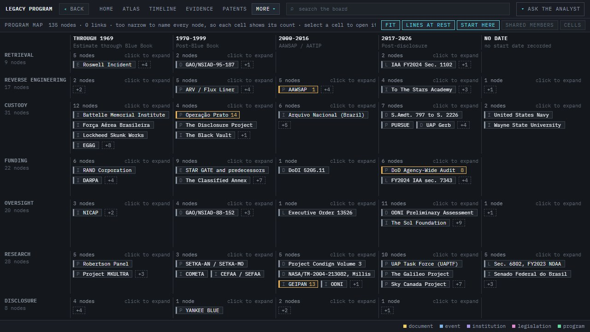
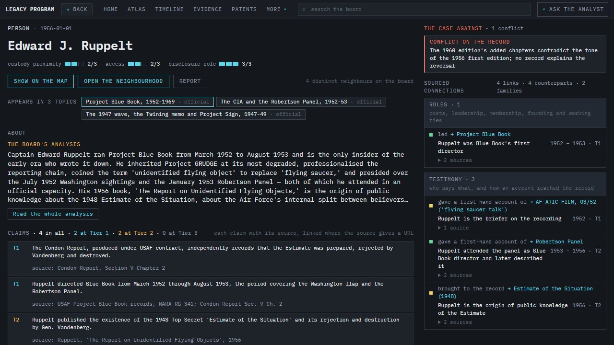
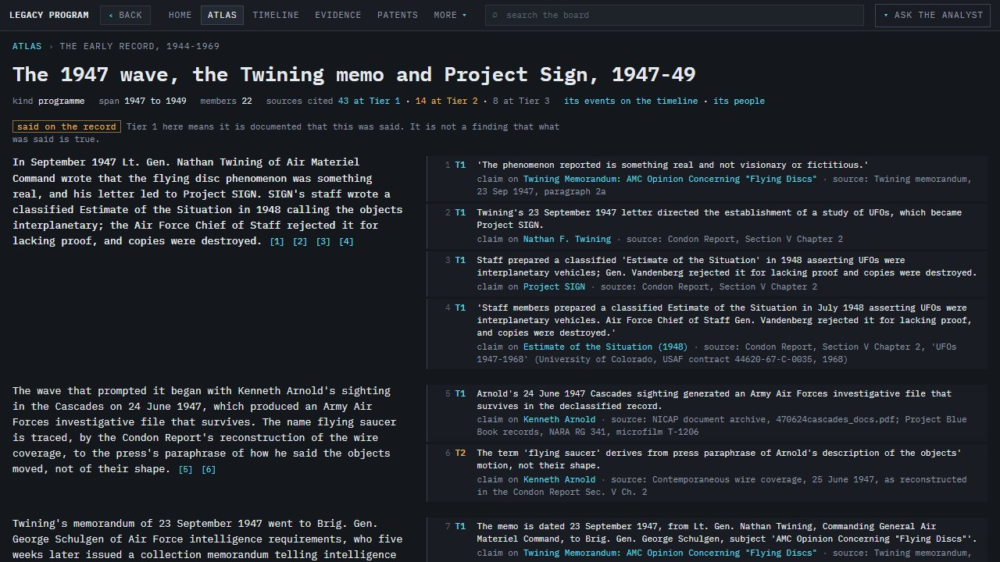
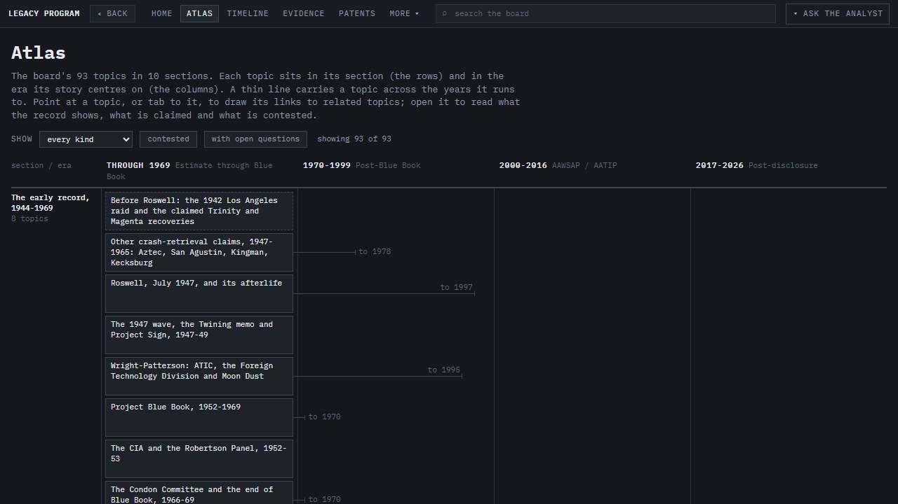
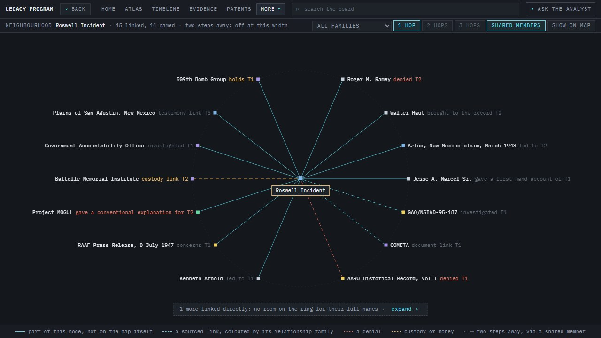

Documented
A primary record says so: a document, a statute, a filing, a transcript.
3,780 claims
In development: v0.10.0
Every player in the UAP legacy program, tracked, sourced and mapped by their connections to each other.
A research board on the alleged United States programme for recovering and reverse-engineering non-human craft, 1944 to now. It does not set out to prove the programme exists. It shows, claim by claim, what a primary record establishes, what a named person has said on the record, and what is only inference.
Runs in the browser, nothing to install. Inclusion on the board is not an accusation.
On the board, as of its 26 September 2026 build
No source, URL, document number or quotation appears on the board that was not opened and read. Where a record could not be found, the board says so in words rather than staying silent.
A primary record says so: a document, a statute, a filing, a transcript.
3,780 claims
A named person on the record says so: testimony, an allegation, an official statement.
1,700 claims
What the board reasons from the record, flagged as such.
580 claims
Many Tier 1 claims document that something was said, such as a sworn statement or a hearing transcript. The board marks these, because Tier 1 there means the words are documented, not that what was said is true.
Statements by AARO and the Department of Defense are treated as an interested party's and capped at Tier 2, unless the claim is about what they said.
Where a witness said one thing and the record shows another, the contradiction is recorded as a finding, on the same page as the claim.
A person, company or agency appears because a record or a public claim connects them to the subject, not because the board finds that they did anything. Many are here because they denied, investigated, reported on or were named by someone else.
Open any node's neighbourhood and its sourced links fan out around it, each one labelled with how the two are connected and how strong the evidence is. Filter by relationship family (custody, oversight, testimony, denials, documents, place and time), or send the links to the program map.
2,788 links, each one citing a document.
A topic reads as a short account in which every sentence carries numbered references. The graded claims it rests on sit in the next column, each with its tier, the node it belongs to and the source named. The Atlas lays the 93 topics out by section and era.
The topic shown: the 1947 wave, the Twining memo and Project Sign.
Events sit in 11 section lanes across four eras, from the early record to 2026. Open an era, filter by strand (program, witness, oversight, cover-up) and click any event to read it.






The app is Vite 5 and TypeScript with no framework, hash-routed, reading generated JSON at runtime. It is hosted on Cloudflare Pages and deployed by GitHub Actions after a gate passes. Stewart Gregerson builds it with Claude.
No invented sources, URLs, document numbers or quotes, anywhere, including in placeholders. If a citation cannot be verified, it is left out and the board says so.
A Python pipeline merges one JSON file per research pass into the board, regrades how close each node sits to the alleged programme, builds the program map and writes the app's data. Each claim and link gets a stable id derived from its content.
The gate re-derives every count from source, requires the committed data to equal a fresh build, and drives the built app in a real browser through 30 checks. Each check is shown failing on a deliberately corrupted input before it is trusted.
Each of the 93 topics was drafted from the board's own claims, then re-derived sentence by sentence from its citations by separate checkers. In the first round 53 of 93 failed, mostly for sentences that said more than their citations.
After each phase that changes what a reader sees, screenshots go to a separate agent with a short brief and no code. It returns the five worst problems a reader would notice, and those get fixed.
"Ask the analyst" is a Claude-backed assistant. Its tools run in the reader's browser against the board's own data, served through a separate Cloudflare Worker.
The board quotes short passages to show what a record says. Quoted material belongs to its authors and publishers, and a citation is not a licence to reuse it. Screenshots and clips on this page show the live board.
| What | Who | Licence or terms |
|---|---|---|
| IBM Plex Mono (this page and the board) | IBM, via Google Fonts | SIL Open Font License 1.1 (text) |
| Agency seals and the RAND text logo, in the board | US government and RAND, via Wikimedia Commons | Public domain |
| US government records: statutes, the Congressional Record and hearing transcripts, agency reports, FOIA releases, court filings | US government | Works of the US federal government are in the public domain in the US |
| US patents and file wrappers | USPTO | Public records |
| Foreign government releases (Brazil, France, Canada, the UK) | Each government | Each government's own terms; cited, linked and quoted briefly |
| Books, articles, broadcasts, podcasts and interviews | Their authors and publishers | Copyright of their authors and publishers; cited and quoted briefly for commentary and research |
| WikiLeaks, The Podesta Emails | WikiLeaks | Cited by email id; personal contact details are not reproduced |
| The board's code | Stewart Gregerson | MIT (the compiled dataset cites its sources; third-party assets keep their own licences) |